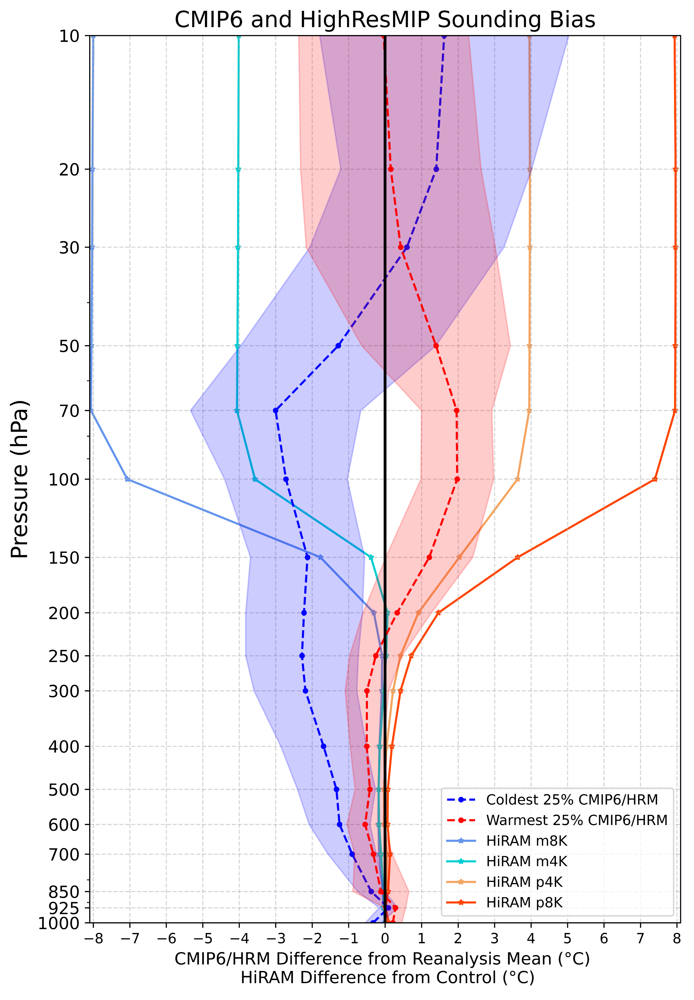
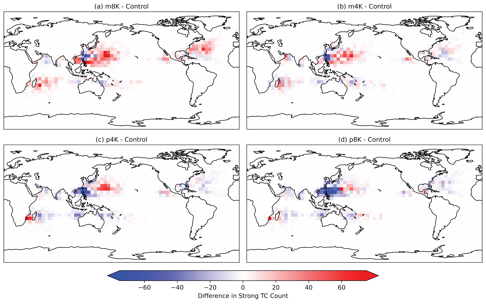

Tropopause Temperature Biases on Tropical Cyclones
Overview: To examine the role of tropopause temperature biases on the development of Tropical Cyclones (TCs)

Figure 1. Tropical mean (a) potential intensity (PI) and (b) outflow level (OTL) compared to the 70-150 hPa layer mean temperature over the open oceans. HighResMIP simulations are solid-colored circles. HiRAM simulations are indicated by stars. The 47 CMIP6 models are gray open circles. Reanalysis data are marked with an X. Linear regression lines are plotted for HiRAM (dashed) and HighResMIP (dotted).

Figure 2. Difference of the coldest 25% and warmest 25% CMIP6 and HighResMIP (HRM) temperature profiles from the mean of MERRA2 and ERA5 reanalysis, where coldest and warmest are determined by 70-150 hPa layer mean temperature. HiRAM simulations with modified upper atmospheric temperature profiles are shown as a difference from the HiRAM control simulation.

Figure 3. Change in strong TC track density relative to the HiRAM control simulation for a) m8K, b) m4K, c) p4K, and d) p8K. Track density is the total number of TC tracks in each 5° x 5° latitude/longitude bin.